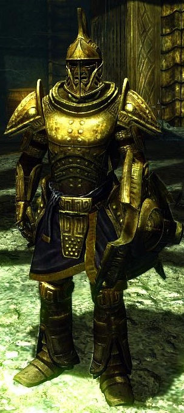

I formally joined the Companions, and learned that the Circle, that group that is the central leadership of the Companions, all are werewolves. I heard through the grapevine that players who join the Circle can also become werewolves. Since I've committed to the Companion track, I think I'll gun for that. I also took down two more dragons and learned a little more about that storyline. It looks like there's a big master dragon that's resurrecting other dragons. I forget his name, but he mocked (pitied?) me when he resurrected another dragon in front of me. Curious. I need to explore that more.
In light of the limitation on how many skills you can master, I've stopped exploring alchemy and magic in favor of my skill focuses - Heavy Armor, Two-Handed Weapons, Smithing, and to a lesser degree, Enchanting. I may drop Enchanting, depending on how easily I can acquire magical items in the future. I like the idea of smithing magical jewelry, and I'm starting to amass quite a collection of components for that. My most recent perk acquisition is Dwarven Smithing. Dwarven armor seems to be just a little better than steel armor, so I'll be upgrading my armor as soon as I can to that standard.
